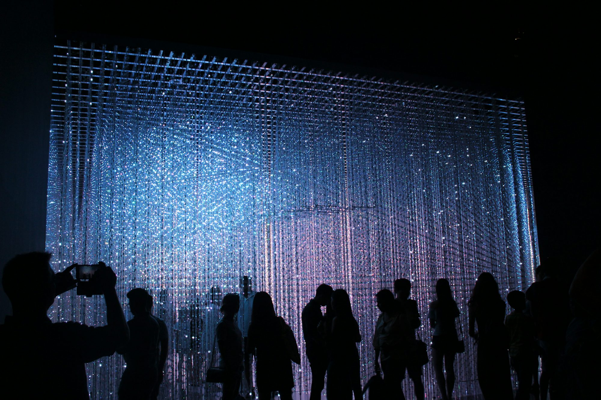

Cultural Pathways: How Museums Shape Our Understanding of the World
This article explores the role of museums in enhancing cultural understanding and fostering community engagement through diverse educational experiences.
Museums are not merely collections of artifacts; they are dynamic spaces that cultivate understanding, appreciation, and dialogue across cultures. By presenting diverse perspectives and narratives, museums foster a deeper connection between individuals and their shared heritage. This article examines how museums serve as cultural pathways, enriching our understanding of the world while promoting community engagement and education. Art museums, such as the Tate Modern in London and the Metropolitan Museum of Art in New York, play a pivotal role in showcasing human creativity. These institutions house an array of artworks from different periods and regions, offering visitors an opportunity to engage with the visual arts. Each painting, sculpture, or installation tells a story, providing insight into the values, struggles, and aspirations of the societies that produced them. Through carefully curated exhibitions and educational programs, art museums invite audiences to explore the connections between art and contemporary issues, encouraging critical thinking and personal reflection. Additionally, many art museums collaborate with local artists and communities to create programs that reflect contemporary cultural dynamics. Natural history museums, like the California Academy of Sciences and the Natural History Museum in London, offer a captivating glimpse into the Earth's biodiversity and history. These institutions serve as custodians of our planet’s natural heritage, showcasing everything from fossilized remains of ancient species to living ecosystems. Engaging exhibits allow visitors to explore the intricacies of the natural world and understand the importance of conservation. Through hands-on displays, interactive workshops, and educational events, natural history museums inspire visitors to consider their relationship with the environment and the significance of preserving our planet for future generations. Science museums, such as the Exploratorium in San Francisco and the Science Museum in London, create vibrant spaces where curiosity meets discovery. With interactive exhibits that challenge visitors to engage with scientific concepts, these museums encourage exploration and experimentation. Whether it's through interactive physics demonstrations, chemistry experiments, or the wonders of space exploration, science museums empower visitors to question, learn, and innovate. Many science museums also emphasize the importance of STEM education, offering programs that inspire young minds to pursue careers in science, technology, engineering, and mathematics. History museums, including the American Museum of Natural History and The British Museum, are essential in preserving and interpreting our collective past. These institutions showcase artifacts, documents, and narratives that reflect the diversity of human experiences. By bringing history to life through engaging exhibitions and immersive storytelling, history museums foster a sense of connection to our shared heritage. They often highlight underrepresented voices and experiences, encouraging visitors to reflect on their own cultural identities and the legacies that shape contemporary society. Technology museums, such as the Computer History Museum and the Museum of Science and Industry, celebrate innovation and the transformative power of technology. These institutions explore the evolution of tools and inventions that have shaped our lives, from early machinery to modern computing. Interactive exhibits allow visitors to engage with technology in a hands-on way, fostering an appreciation for the advancements that have revolutionized society. Educational programs often focus on the ethical implications of technology, prompting discussions about its impact on daily life and future developments. Specialty museums cater to specific interests, offering unique insights into niche subjects. The Museum of Pop Culture in Seattle, for example, showcases the cultural significance of music, film, and video games. These institutions create community connections among enthusiasts, celebrating shared passions while providing educational resources and programs that deepen understanding of specific cultural phenomena. Children's museums are designed to inspire the next generation through interactive and playful learning experiences. Institutions like the Children's Museum of Indianapolis and the Brooklyn Children's Museum create spaces where young visitors can explore, play, and discover. Through hands-on exhibits and activities, these museums promote creativity, critical thinking, and social skills. Programs often integrate art, science, and cultural exploration, providing a holistic educational experience that nurtures curiosity and imagination. In recent years, virtual museums have emerged as a groundbreaking way to expand access to cultural experiences. These online platforms offer virtual tours, interactive exhibits, and educational resources, making art and history accessible to a global audience. Virtual museums enable individuals who may not have the opportunity to visit physical locations to engage with diverse collections from the comfort of their homes. This digital shift has been instrumental in fostering inclusivity and democratizing access to cultural education. Ethnic and cultural museums are vital in celebrating and preserving the heritage of specific communities. These institutions highlight the art, history, and cultural practices of diverse groups, promoting understanding and appreciation for different perspectives. Through exhibitions, performances, and educational programs, ethnic and cultural museums foster dialogue about identity and inclusion, enriching our understanding of the human experience. Living museums, such as Colonial Williamsburg and the Henry Ford Museum, offer immersive experiences that transport visitors to different historical periods. These interactive environments allow individuals to engage with history through reenactments, demonstrations, and hands-on activities. Participants can experience daily life from various eras, gaining insight into the cultural practices and societal dynamics of the past. Living museums not only educate but also celebrate cultural heritage through active participation, making history tangible and relatable. The impact of museums extends beyond their physical spaces; they are integral to community engagement and social cohesion. Many museums host events, workshops, and discussions that bring people together, fostering connections and collaboration among diverse groups. By partnering with schools, local organizations, and artists, museums create programs that address community needs and interests, reinforcing their role as cultural hubs. As we navigate an increasingly interconnected world, the importance of museums in fostering curiosity, dialogue, and understanding cannot be overstated. They provide spaces for exploration, reflection, and connection, encouraging individuals to engage with the world around them. By embracing the diverse offerings of museums, we can enrich our understanding of humanity and inspire future generations to appreciate the richness of our shared cultural heritage. In conclusion, museums serve as cultural pathways that enhance our understanding of the world. Through their diverse collections and educational programs, they promote cultural awareness, community engagement, and lifelong learning. By celebrating the arts, sciences, history, and cultural diversity, museums empower visitors to explore, learn, and connect with one another. Supporting and nurturing these institutions contributes to a more informed, inclusive, and vibrant society.